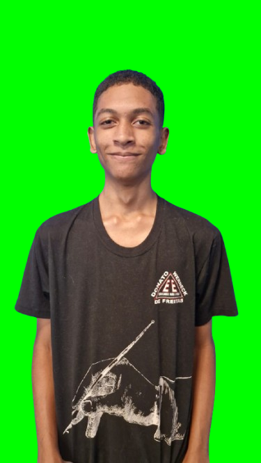

AudioSearch Pro
Conheça o melhor buscador de áudios pelo nosso site
Tendências

Tendência 1
Descrição breve da tendência 1

Tendência 2
Descrição breve da tendência 2

Tendência 3
Descrição breve da tendência 3
Categorias
Músicas
Encontre suas músicas favoritas
Podcasts
Explore podcasts populares
Efeitos Sonoros
Biblioteca de efeitos sonoros
Sons Ambiente
Sons relaxantes e ambientais
Recursos
Busca Rápida
Encontre áudios em segundos
Download Fácil
Baixe em diversos formatos
Conteúdo Seguro
Áudios verificados e seguros
Favoritos
Salve seus áudios preferidos
Sobre Nós
Aqui no AudioSearch Pro você encontrará todos os áudios disponíveis na internet de GRAÇA! O serviço é oferecido a empresas de músicas, cantores, músicos entre outros que buscam por um áudio e não encontram.
Nossa Equipe
Anderson Jr
Desenvolvedor Frontend e Backend
André Yuri
Designer

Breno
Estagiário
Luiz Eduardo
Administrador Financeiro